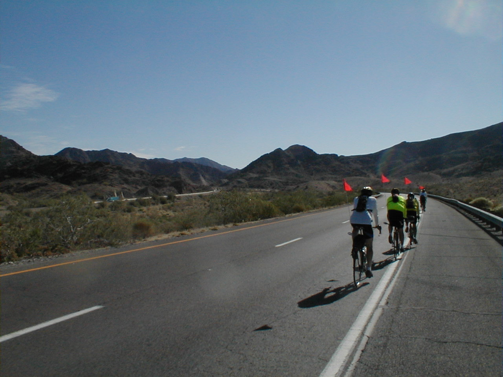

Day 4: May 16, Blythe, CA to Wickenburg, AZPrevious Day - Home - Next Day Photo of the DayA nice early morning climb through Arizona. Keegan's LogDay 4: May 16, Blythe, CA to Wickenburg, AZ Mileage: 118.84 milesWeather: 85-105 degrees, Sunny Vertical Climb: 2180 feet Riding Time: 8 hours Today was a tough ride, the longest one of the trip. The day began a little late as our pancakes took a half hour to materialize, leaving only about 3 minutes to scarf them down. The morning was much like yesterday's ride, we began with two long climbs out of a valley. The sun brought the temperatures up quickly, so it was well over 100 degrees by noon. At about 5 miles we crossed our first state line, going from California to Arizona. We stopped to sprinkle Pacific sand on the state line, a tradition claimed to appease the bike fairies and elves. We also saw the first cacti in Arizona, so we stopped to get a few photos. At around 55 miles into the ride, we scaled a ridge that brought us into a higher valley. The winds changed from the headwinds we had in the morning to a small tailwind, which help a lot in pushing us along. The air got a bit cooler, and some farms appeared, in strict contrast to the sandy desert below. During the afternoon we did a little more climbing as we made our way to Wickenburg. I stopped about every 30 miles for water, it disappears fast when the temperatures get this hot. The miles slowly wound away, until the last 10 miles opened into a decent down to Wickenburg. Dinner was delayed as people slowly trickled in, but the lasagna was worth the wait. Dad and I left early to get to bed, tomorrow will be a short rid, but we have to climb up about 5000 feet to Prescott. They tell us the first four days are the hardest, so it should be all downhill from here! Phil's LogOutside is a train whistle and the rumble of the engines. It is probably running at night because the days are too hot. This was a rough day. It started with a long climb (see the website, http://expert.cc.purdue.edu/~brownkl) then continued with flatland and more hills. The desert is truly beautiful in any light, and saguaro and ocotillo are everywhere. Lunch was in Salome, an old cafe, dark, where three grizzled locals in cowboy hats were keeping an eye on these oldsters in weird outfits, looking as bedraggled as could be, had arrived through the desert on bicycles. In another stop, Keegan was trying to explain why we were riding bicycles across the country. I'll write in the future about some of the characters in our troupe. None are anything near ordinary. All are interesting and fun to know. Some are amazing. Temp this morning was 85F, went to 105. Tomorrow we climb about 5000 feet, so with the adiabatic lapse rate it should be about 20 degrees cooler. Can't wait! |
{kind=link}